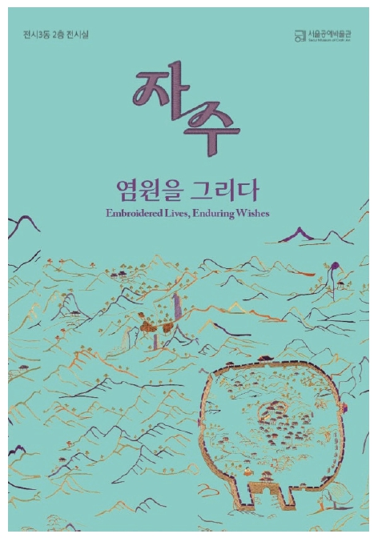
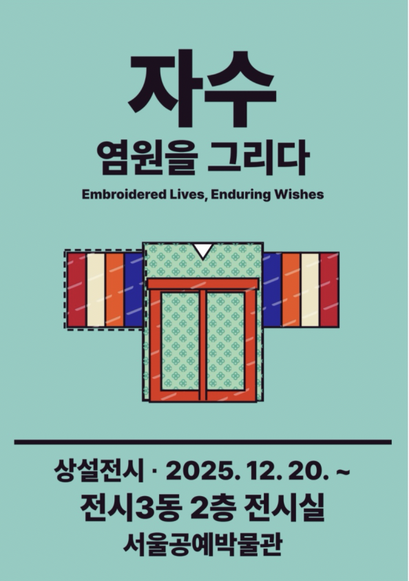

본문으로 건너뛰기
보기 방식 선택으로 이동
인터랙티브 포스터
모두 읽기
멈추기
빠르기 · 보통
확대
보기 설정
기본
크게
더 크게
고대비 켜기
스피커 표시를 누르면 해당 부분을 읽어줍니다.
원본 포스터

원본 포스터
· 스피커 표시를 누르면 해당 부분을 소리로 읽어줘요.
보기 방식 바꾸기
약시
터널시야
색맹

자세한 설명 항목
항목을 열어 자세한 내용을 확인하거나 스피커 버튼으로 들을 수 있습니다.
선택한 정보
멈춤
보기 방식 목차로 돌아가기
포스터 크게 보기
닫기